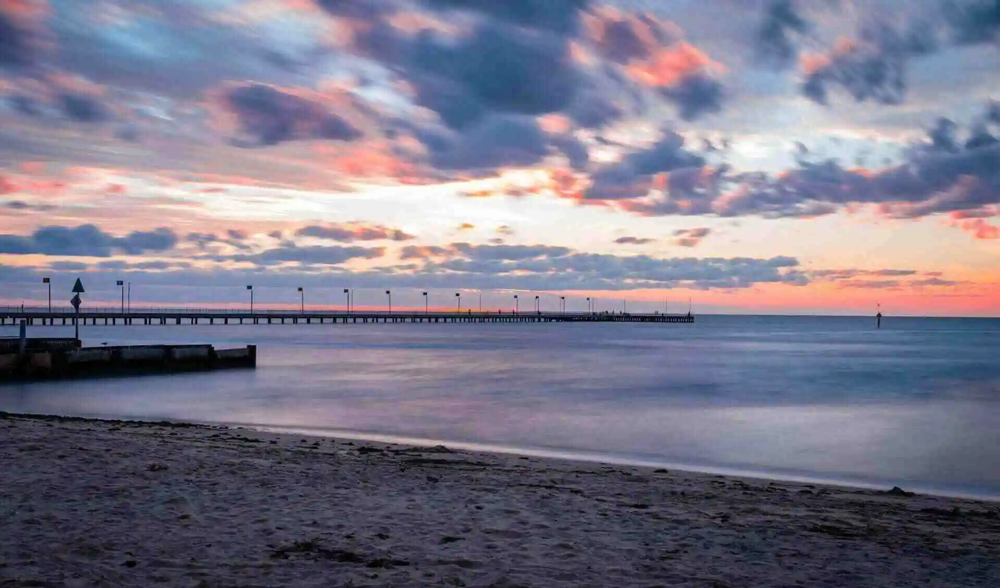

Home Page
Photo by Vivek Kuppa on Unsplash
Welcome to Frankston Beach!
With 10 kilometres of pristine beach and coastal habitat, wander the boardwalks and paths to
discover why
Frankston's coastline is the envy of Melbourne at any time of year!
Fun and excitement abound at the Frankston Waterfront Entertainment Precinct. Home to many of the city's
major festivals and events, you can stumble across unique artworks, burn-off energy at the award-winning
adventure playground and participate in a range of water-based experiences.
For those seeking a more tranquil experience, Seaford foreshore is postcard perfect. Crystal blue water,
nestled behind the tea-trees, this hidden gem is a local favourite. Quiet enjoyment is key here, as you
make your way across undisturbed white sand, along the pier before stopping in at the local café to
watch the waves roll in and the sun set.
Content: https://www.imaginefrankston.com.au/beach
Current Weather

Don't know how to get there?
Click on the button to get directions!